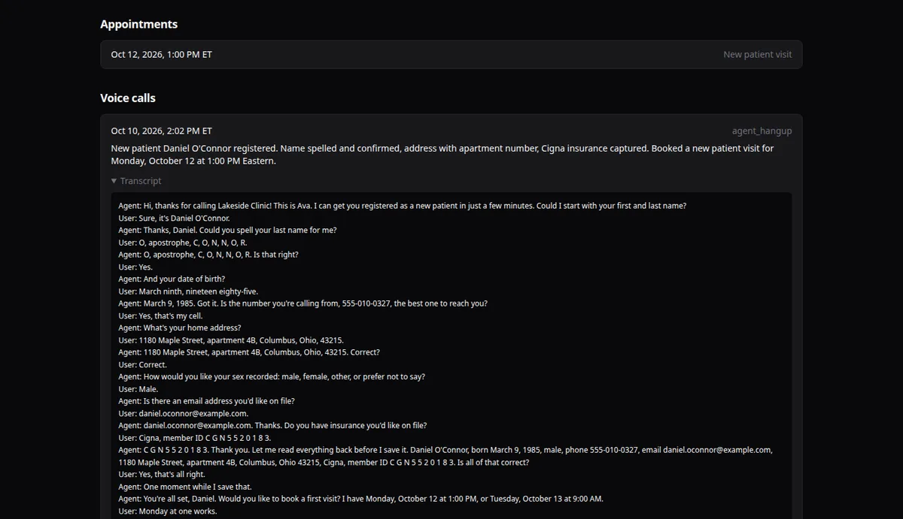
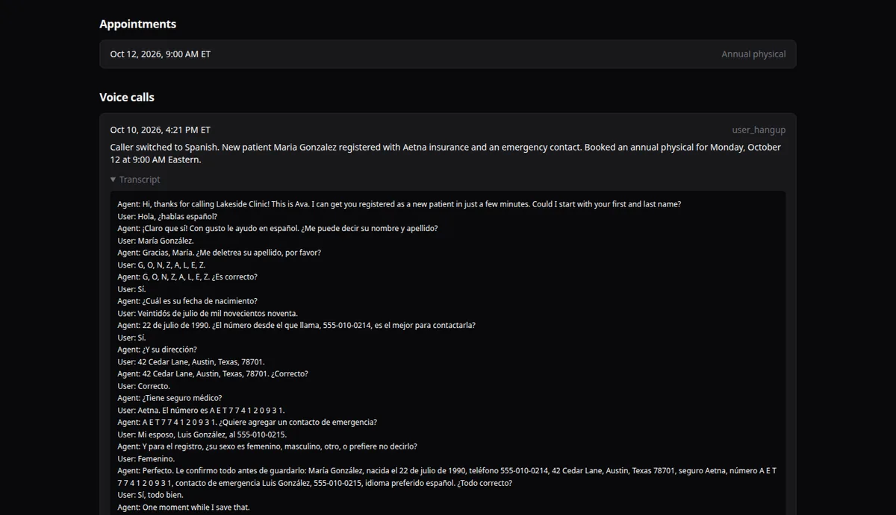
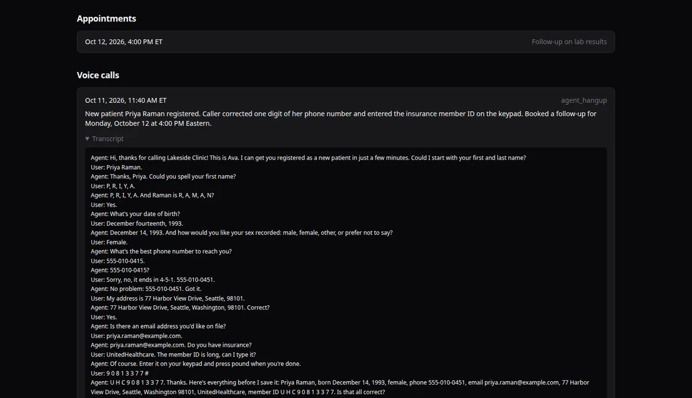
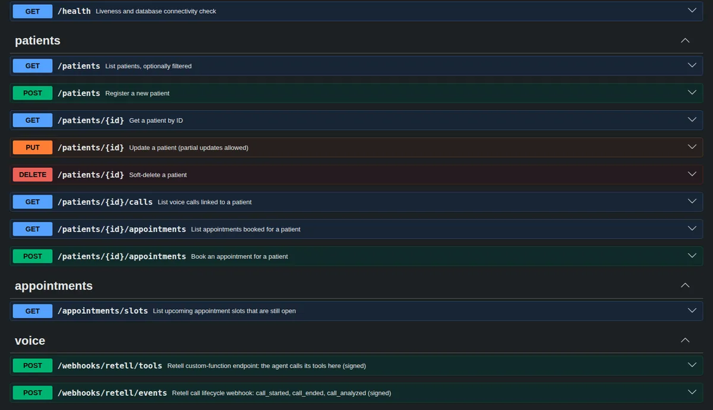

Walkthrough
Inside the product.
Screenshots from a local run on fictional demo data.
Patient registry · Next.js dashboard

One patient record, as the agent saved it

Call summary and transcript, linked to the record

Caller switches to Spanish mid-call

A corrected digit and keypad entry for an ID
Agent & API

The register tool: no retries, confirmed fields only

Prompt rules for read-back and saving

OpenAPI docs generated from the Zod schemas